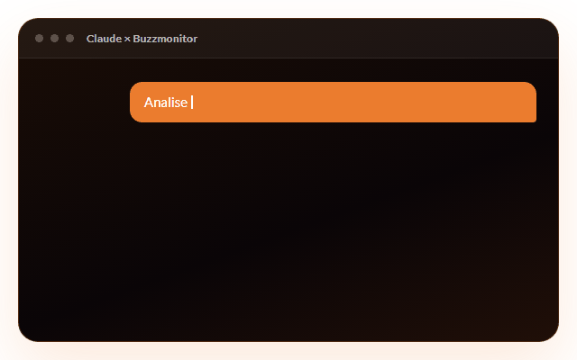

Leve os seus dados de Social Listening para o Claude ou o ChatGPT. E converse com eles.
Ligue a Buzzmonitor à IA que já utiliza e transforme dados de social listening e de atendimento em análises, relatórios e dashboards, em linguagem natural.
Sem exportar folhas de cálculo, sem programar, sem ter de começar uma análise do zero.
Veja em apenas 3 minutos como funciona o MCP da Buzzmonitor
Na prática, o que é o MCP da Buzzmonitor?
O MCP é a ponte que liga o Claude ou o ChatGPT aos dados da Buzzmonitor.
Depois de criar os seus projetos de monitorização na plataforma e de ligar o MCP, basta conversar com a IA:
O que estão a dizer sobre a minha marca esta semana?
Compare a minha marca com dois concorrentes nos últimos 30 dias.
Quais foram as menções da minha campanha com mais interações?
Há algum aumento de buzz negativo que mereça atenção?
A IA consulta os dados da Buzzmonitor e ajuda a resumir, comparar, explorar e transformar essa informação em insights, em segundos.
Pode aceder a:
Buzzmonitor Trends
Dados públicos sobre marcas, concorrentes, produtos e temas.
Os seus projetos de monitorização
As menções que a sua conta já acompanha na Buzzmonitor.
O seu CRM
Dados das contas e canais ligados à plataforma.
E nem precisa de começar do zero.
O MCP já traz análises prontas a usar.
Além de ligar os seus dados à IA, a Buzzmonitor disponibiliza Skills prontas para executar análises específicas. Cada uma resolve uma tarefa que hoje ocupa um turno inteiro de um analista.
Pense nas Skills como competências especializadas: em vez de montar à mão todo o raciocínio, os filtros e a estrutura de um relatório, basta pedir a análise e a IA aplica a Skill aos dados.
Por exemplo:
Dashboard de Campanha
Perceba a repercussão, a evolução, o impacto, a perceção e os principais comentários de uma campanha.
Report de Crise
Analise o buzz negativo, a evolução de uma crise, os principais detratores e os caminhos possíveis para a mitigar.
Marca x Concorrentes
Compare a sua marca com a concorrência e encontre diferenças e oportunidades nos dados.
Tendências de Categoria
Identifique movimentos do seu setor e perceba em que fase está cada tendência.
Filtro de Região
Separe as publicações por região antes de aprofundar a análise.
Exploring
Encontre as marcas mais citadas num conjunto de posts e transforme o resultado num dashboard interativo.
Há mais no chat. Pergunte que skills oferece a Buzzmonitor? e o Claude mostra o que está disponível para a sua conta.
Consulta as menções, identifica mudanças no buzz e ajuda a organizar os principais sinais da crise.
Cruza as conversas encontradas e ajuda a visualizar volume, temas e diferenças entre as marcas.
Aplica uma análise estruturada aos posts e transforma os resultados num dashboard visual.
Procura as conversas e organiza os movimentos encontrados para facilitar a sua leitura estratégica.
Menos tempo à procura de dados.
Mais tempo a usá-los.
A Buzzmonitor liga a monitorização e o atendimento ao Claude e ao ChatGPT, para que a sua equipa possa investigar dados, responder a perguntas e transformar informação em análise dentro da própria conversa.
E com as Skills da Buzzmonitor, algumas das análises mais importantes do dia a dia já arrancam com a metodologia definida.
Quero conhecer o MCP da BuzzmonitorJá é cliente da Buzzmonitor? Ligue a sua conta e comece a explorar.
Ainda não é cliente? Conheça a Buzzmonitor e veja o MCP a funcionar na prática.
Pergunte.
A Buzzmonitor vai buscar os dados.
A IA transforma-os em análise.

Os seus dados continuam protegidos. O MCP faz as consultas em tempo real através da API da Buzzmonitor e não armazena as publicações nem as menções consultadas. A ligação da conta utiliza autenticação segura.